FFRob: Leveraging symbolic planning for efficient task and motion planning
Caelan Reed Garrett et al.
- Related work Manipulation planning Symbolic planning Task and motion planning
Symbolic planning representation: SAS+: equivalent of STRIPS **Relaxed evaluation: ignores delete effects Condition tests dynamic programming + lazy collision checking Search algorithms: any standard search Search heuristics
Combining task and motion planning: A culprit detection problem
Fabien Lagriffoul et al.
CTAMP: Combined Task and Motion Planning logical constraints by a task planner based on answer set programming (ASP, Lifschitz, 2008)
Key components: 1. geometric reasoner capable of analyzing the cause of geometric failures. 2. A common language between the geometric reasoner and the task planner to describe the cause of failure other than mere โsuccess/failureโ.
Question: how to find the minimal explanation for geometric failures
The problem this paper is trying to solve: if a task is not feasible, โexplainingโ in a geometric way?
- Benefit: stop searching from high-level (infinite number of unfeasible plans by permuting the temporary locations of blocks, by permuting the order of actions, or by increasing the number of actions)
Isolating the minimal number of factors explaining the failure is the culprit detection problem that we propose to solve
Learning Markov State Abstractions for Deep Reinforcement Learning
Cameron Allen et al., NeurIPS2020
- Tag:#mdp#george_konidaris
- Progress 40%
- Link, Github
ไธป่ฆๅทฅไฝ:
- ** ไปrich observationไธญ๏ผๆฝๅMDP็abstract state representation็ๅ ๅๆกไปถ(sufficient conditions)**
- ้ฆๅ ๅบ็กๅ่ฎพๆฏ่ทๅ็state representation满足Markov property 
- ่ทๅMarkov abstract state representation็ๅ
ๅๆกไปถ
- The agentโs policy
- The inverse dynamics model:
ๅฏนๆฏTransition model ๏ผไธค่ ๅฏ้่ฟ่ดๅถๆฏๅฎ็Bayesโ theorem่ฟ่ก่ฝฌๅ - A density ratio
้่ฆๆพๅฐๆดๅ็กฎ็ๅฎไน
- ไธ่ฟฐๆกไปถapproximately satisfied using a combination of two popular representation learning objectives:
- Inverse model estimation: ้ขๆตactionๅๅธ๏ผ็จไบ่็ณปไธคไธชๅ
ๅๅ็็็ถๆ
Predicts the action distribution that explains two consecutive states
- Temporal contrastive learning: ๅณๅฎไธคไธช็ถๆๆฏๅฆๅๅๅ
ณ่
Determines whether two states were in fact consecutive.
- Inverse model estimation: ้ขๆตactionๅๅธ๏ผ็จไบ่็ณปไธคไธชๅ
ๅๅ็็็ถๆ
Evaluating Learned State Representations for Atari
Adam Tupper et al., IVCNZ2020
- ไธป่ฆๅทฅไฝ๏ผ
- ๆฃ้ช้่ฟไธๅ็autoencoders๏ผไธ็ง็จๆฅๅrepresentation learning็็ฅ็ป็ฝ็ป๏ผไนๅพstate่กจๅพ็ๆๆใๆๅบไบๅฆไฝ่ฏไผฐlearned state representations็ๆนๆณ
- ้็จ็Autoencoders
- AEs: Autoencoders
- VAEs: Variational autoencoders
-VAEs: Disentangled variational encoders
Visual Rationalizations in Deep Reinforcement Learning for Atari Games
Laurens Weitkamp et al., BNAIC2018
- ไธป่ฆๅทฅไฝ๏ผ้่ฟไฝฟ็จGrad-CAMๅฐRL agent็decision processๅฏ่งๅ๏ผๅๅปบaction-specific activation mapsๅฐthe most important evidences็ๅบๅ้ซไบฎ
State Abstractions for Lifelong Reinforcement Learning
David Abel et al., ICML2018
- Progress: . link
A Theory of Abstraction in Reinforcement Learning
David Abel, Thesis 2020/AAAI 2019
- Progress: . link to the thesis, link to the paper
Symbolic algorithms for graphs and Markov Decision Processes with fairness objectives
Krishnendu Chatterjee et al., International conference on computer aided verification 2018
- Progress: .link